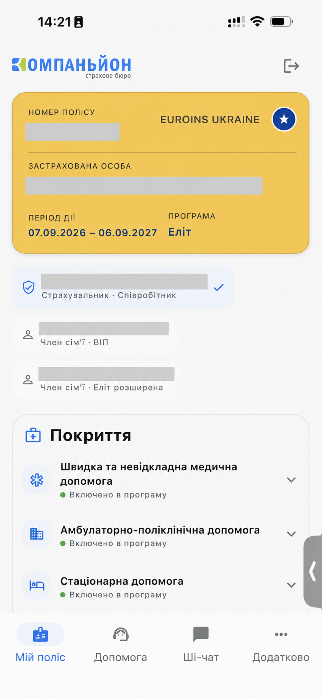

Формуємо запит до страховиків
Узгоджуємо покриття, категорії застрахованих, географію та бюджет. Готуємо єдине завдання для учасників тендеру.
Наша спеціалізація / Корпоративне ДМС
Допомагаємо бізнесу обрати програму добровільного медичного страхування та зробити її зрозумілою для працівників. Від першого порівняння пропозицій до щоденної підтримки — ми на вашій стороні.

Застрахована людина може переглянути покриття, ліміти та винятки, знайти контакти асистансу й звернутися по підтримку без пошуку в документах і чатах.
01 / Починаємо з вашої команди
З’ясовуємо, де працюють ваші люди, які клініки їм зручні, що важливо у покритті та які витрати компанія планує на страхування.
Якщо ДМС уже є, аналізуємо чинні умови, доступну статистику звернень і виплат та зворотний зв’язок працівників. Якщо запускаєте програму вперше — допомагаємо сформувати вимоги.
02 / Аналітика та тендер
Перетворюємо різні пропозиції страховиків на зрозумілий вибір. Пояснюємо, що ви отримуєте за запропонований бюджет і де є обмеження.
Узгоджуємо покриття, категорії застрахованих, географію та бюджет. Готуємо єдине завдання для учасників тендеру.
Обговорюємо пропозиції з фіналістами, уточнюємо спірні умови та готуємо рекомендацію. Остаточне рішення залишається за вами.
Супроводжуємо узгодження договору та списків застрахованих. Пояснюємо працівникам можливості програми, контакти й порядок дій.
Достатньо часу, щоб залучити ринок, зіставити умови та спокійно узгодити рішення всередині компанії.
Можливий, коли звужуємо коло учасників до приблизно п’яти страхових компаній і швидко отримуємо потрібні дані від вас.
Конкретне покриття, доступні клініки, ліміти та порядок отримання допомоги визначаються обраною програмою і договором страхування.

Старший партнер, директор з особистих видів страхування
Національний медичний університет імені О. О. БогомольцяЛікар невідкладних станів, лікар загального профілю.
03 / Щоденна підтримка
Наші фахівці допомагають розібратися в медичних документах, умовах покриття та відповіді страховика. Беруть участь у комунікації зі страховою компанією й асистансом.
Директор напряму ДМС та фахівці команди мають медичну освіту.
Наша роль — страховий супровід і представництво ваших інтересів. Діагностику та лікування здійснюють медичні заклади.
04 / Врегулювання страхових випадків
Допомогу не погодили, виникло запитання щодо покриття або затягнувся розгляд документів? Допомагаємо з’ясувати причину та пройти наступні кроки.
Відстоюємо ваші інтереси на підставі умов договору. Рішення про покриття чи виплату ухвалює страхова компанія.
Вивчаємо звернення, умови програми, наявні документи та пояснення страховика.
Уточнюємо, яких документів бракує, допомагаємо сформулювати запит або аргументовану скаргу.
Просимо пояснити підстави рішення та, коли є аргументи, ініціюємо повторний розгляд.
Стежимо за розглядом звернення, пояснюємо відповідь і подальші дії. За погодженого відшкодування супроводжуємо питання виплати.
05 / Розвиток програми
Повертаємося до результатів програми, щоб обґрунтовано рекомендувати, що зберегти, розширити або переглянути.
Перед стартом
Так. Почнемо з аналізу чинної програми та питань, які виникають у працівників і HR. Узгодимо, який супровід потрібен зараз і що варто підготувати до наступного тендеру.
Достатньо описати команду, міста роботи, бажане покриття та орієнтовний бюджет. Якщо є чинна програма, її умови допоможуть зробити порівняння предметнішим.
Порядок звернення визначає ваша програма; зазвичай допомогу координує асистанс страхової компанії. Ми пояснюємо цей порядок і підключаємося, коли потрібні роз’яснення або підтримка у взаємодії зі страховиком.
Ми беремо на себе підбір умов, супровід програми та роботу зі страховими зверненнями. Ви отримуєте зовнішню команду без витрат на утримання власного відділу. Обсяг співпраці й умови обговорюємо до початку роботи.
Ми робимо страхування зрозумілим
Залиште контакти — ми зв’яжемося протягом 24 годин, уточнимо ваш запит і погодимо зручний час робочої зустрічі.